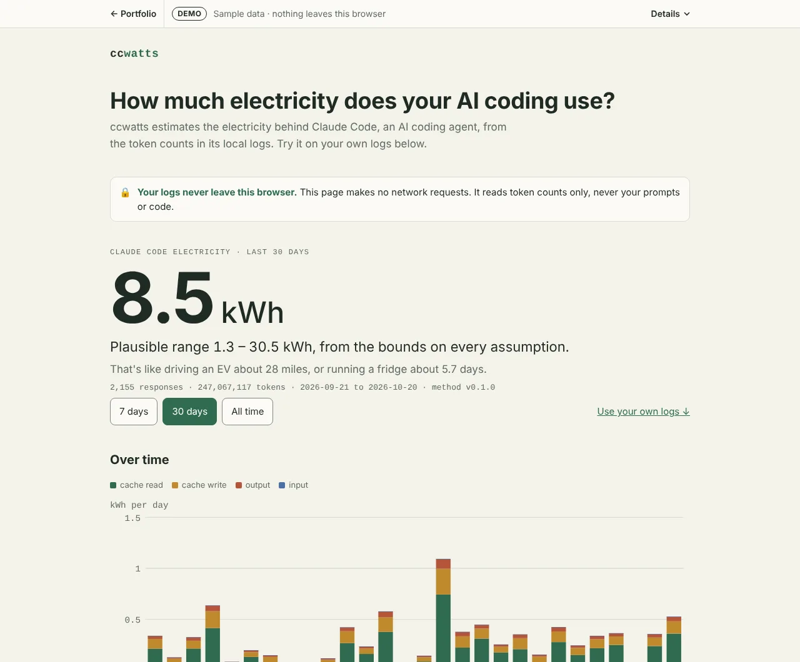

The check
Same question as a climate scientist, and the ranges overlap.
Hausfather, by hand70–330 kWh, about 170
ccwatts, same case32–678 kWh, central 194
Eight weeks of heavy Claude Code use, log scale. ccwatts' range is wider on purpose. The token mix is illustrative because Hausfather's exact counts aren't published (METHODOLOGY.md).
The problem
Developers run AI agents all day and almost nobody can see the electricity behind it. Providers don't publish energy per token, and public estimates disagree by about 10x. In 2026 the climate scientist Zeke Hausfather worked out his own Claude Code use by hand, at about 170 kWh over eight weeks. Existing log tools counted tokens and cost, not energy.
What I built
- One command: electricity for the last 30 days, an everyday comparison, and the split by model, token type and project.
- A playground in the browser: opens on labeled sample data, needs no install, and parses your own logs on the page without uploading them.
- A history that lasts: Claude Code deletes old logs, so ccwatts keeps its own daily counts, and can export them or make a shareable card.
- Inside Claude Code: the same CLI ships as a plugin, so you can check usage without leaving a session.


Synthetic sample data, not anyone's real usage.
How the estimate works
Energy is tokens times an energy cost per token, by model family and token type. Every parameter has a low and a high bound, a source and a date, and the bounds combine into the range you see. The least certain assumption is what a cache read costs, which matters because cache reads are usually 90%+ of an agent's tokens. The method uses 10% of fresh input and tests 1% to 25%, and the playground has a "What if?" slider for it.
Published figures from Google and Microsoft, and Hausfather's 170 kWh, run as unit tests.
Product calls
- Dev tool first. I started on an enterprise carbon feed, found an established player already publishing a method, and pivoted to the individual developer.
- Honest numbers. Public estimates vary by an order of magnitude, so it always shows a range and a public methodology.
- Privacy is the trust story. No network calls, no telemetry, counts only, no prompt or code content, and no mobile app because the data lives on laptops.
Proof
- Privacy, enforcedThe web page's Content-Security-Policy is default-src 'none', and a test confirms zero requests in a real browser.
- Tested30+ test files and CI on every change.
- OpenMIT license for the code, CC BY 4.0 for the methodology and parameters.
- On npmPublished as ccwatts and runnable with npx.
Try it
Sample data, no logs needed (Node 22+):
npx ccwatts --demoYour own Claude Code logs:
npx ccwattsAs a Claude Code plugin:
/plugin marketplace add holroydchase-afk/ccwattsStatus and what's next
The CLI and the playground are live. 0.2.0 is finished and waiting on my npm publishing setup. It adds an opt-in view of your own work rhythm and an opt-in bedtime nudge, both counts only and local.